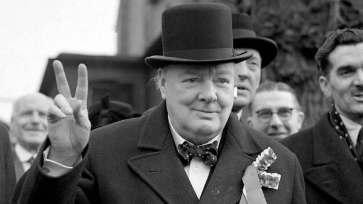

Не можна сказати, щоб то був найбільший українофіл у британській історії, але так склалося, що десь так
починаючи від Майдану-2014, саме Вінстона Леонарда Спенсера-Черчилля у нас, коли йдеться про змаги за
державу, найбільше цитують.
Британський політик Вінстон Черчілль (30 листопада 1874 - 24 січня 1965). Більш відомий як прем'єр-міністр
Великобританії в роки Другої Світової війни, прославився також на ниві літератури, ставши в 1953 році
лауреатом Нобелівської премії «за неперевершеність історичного й біографічного опису, за блискуче ораторське
мистецтво, з допомогою якого відстоювалися найвищі людські цінності»

Правила життя
- Песиміст бачить труднощі при кожній нагоді, оптиміст у будь-яких труднощах бачить можливість.
- Вдосконалюватися – значить змінюватися, бути досконалим – означає змінюватися часто.
- Успіх – це вміння рухатися від невдачі до невдачі, не втрачаючи ентузіазму.
- Заглядати занадто далеко вперед – недалекоглядно.
- Розумна людина не робить всі помилки сама – вона дає шанс і іншим.
Черчиль про людей
- Збирати гроші – річ корисна, особливо якщо це вже зробили ваші батьки.
- Дипломат – це людина, яка двічі подумає, перш ніж нічого не сказати.
- З досвіду великих справ я виніс, що намагатися залагодити все відразу часто є помилкою.
- Ви ніколи не дійдете до місця призначення, якщо будете жбурляти каміння в кожну собаку, що гавкає.
- Я оптиміст. Не бачу особливої користі бути ще чимось.
Під час війни Черчиллю принесли на розгляд бюджет країни. Погортавши документ, він запитав:
- А де ж витрати на культуру?
- Так війна ж іде! Яка культура?
- Якщо немає культури, навіщо ми тоді воюємо? - здивувався Черчилль.